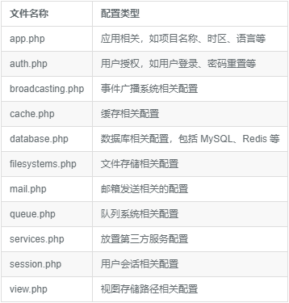

存放位置
laravel 框架的所有配置都保存在 config 目录中, 每个文件中包含多个配置选项, 每个选项都有说明, 可以随时查看

访问配置值
使用全局 config 函数来访问配置值. 配置值的访问可以使用点语法, 包含了要访问的 文件名称 和 选项名称. 还可以指定默认值
$value = config('app.timezone');
要在运行时设置配置值, 传递一个数组给 config 函数
config(['app.timezone' => 'America/Chicago']);
调整配置信息
现在我们调整几个配置信息
应用名称
config/app.php
'name' => env('APP_NAME', 'Laravel'),
应用链接
时区修改
config/app.php
'timezone' => 'Asia/Shanghai',
默认语言
config/app.php
'locale' => 'zh-CN',
git 提交
$ git add -A
$ git commit -m "Adjust configuration"